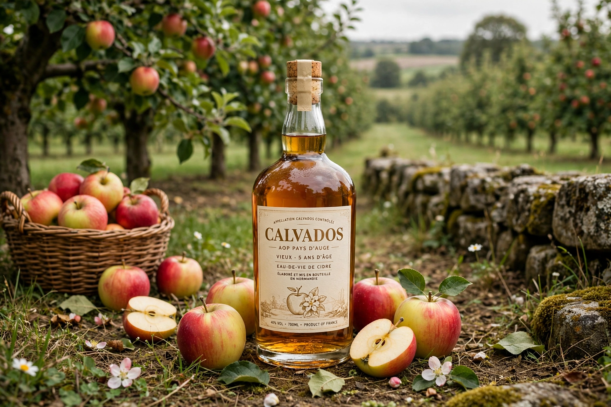

Calvados is a department in the Normandy region of northwestern France, named after a group of rocks off its coast. Its prefecture is Caen. The name also denotes the famous apple brandy produced there.
| Calvados | |
|---|---|
 | |
| Country | France |
| Region | Normandy |
| Prefecture | Caen |
| Department number | 14 |
| Area | 5,548 km² |
Created in 1790 during the French Revolution, Calvados was the site of part of the D-Day landings on 6 June 1944 — Sword, Juno and Gold beaches — and the Battle of Normandy that followed devastated Caen and other towns.
The department includes the Pays d'Auge countryside of orchards and half-timbered villages, the resort coast around Deauville, Trouville and Honfleur, and the historic town of Bayeux, home of the Bayeux Tapestry. Agriculture, tourism, horses and cider and Calvados brandy production are central to its economy.
The spirit is an apple (and sometimes pear) brandy protected by appellation d'origine contrôlée, distilled from cider and aged in oak for at least two years. The ritual trou normand — a glass of Calvados taken between courses — is a local tradition.
Recreated from memory.